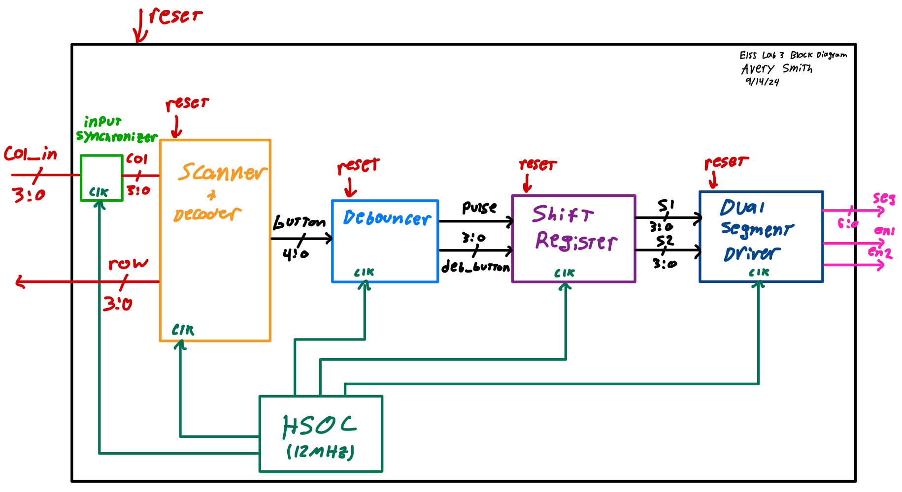
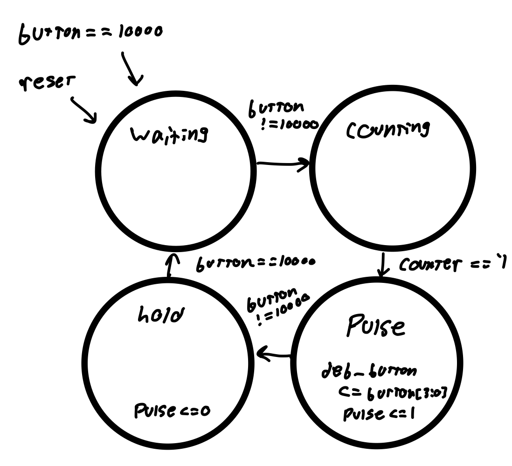
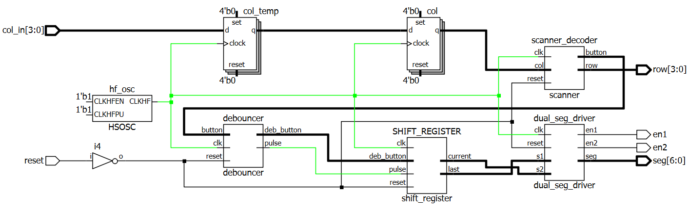
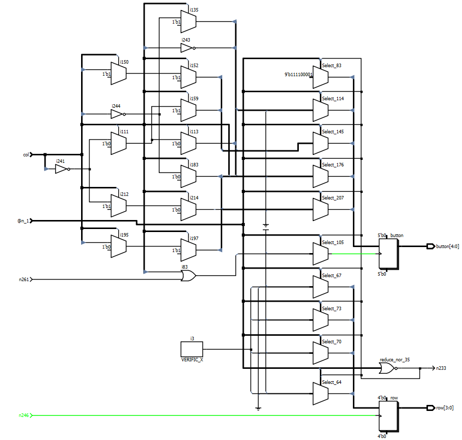
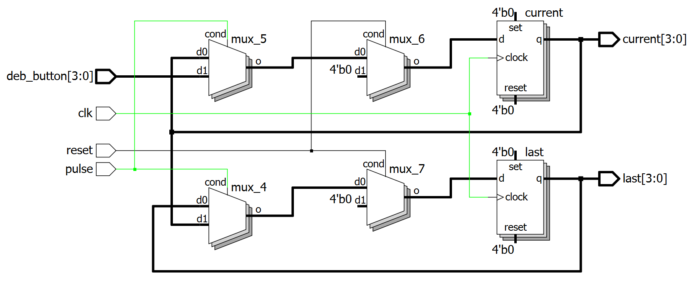

Lab 3: Keypad Scanner
Time Spent: 13 hours
Main Goals
The challenge for this lab was to create scanning logic for an 8-pin 16-button hexadecimal pin pad. Then we had to integrate this with last week’s lab to display the most recent and previous button presses on a dual seven-segment display.
Design
This design used four main modules: a scanner and decoder, a debouncer, a shift register, and a dual segment driver which contains the time mux and segment encoder from last week’s lab. The block diagram for the project is below.

My first challenge was to design scanning logic to read the pressed button. The keypad has four rows and four columns as shown in the diagram below courtesy of the e155 website.
When the i, jth button is pressed, the pins corresponding to the ith column and jth row are connected. I decided I would apply voltage to the rows and measure the columns as inputs. However, voltage cannot be applied to all four rows at the same time since there would be no way to distinguish which row the jth column was connected to. Instead, suppose the FPGA scans one row at a time, applying voltage to each row in quick succession. In that case, the active row and column can be used to determine which button is pressed, and if the scanning rate is sufficiently fast, it is unnoticeable to the user. I designed the FSM below to handle this task.
In states S0-S3, the corresponding row (rx) is set high and the scanner looks for a button press (indicated by a column going high). If a button push is registered, the state is set to the holding states S4-S7. Otherwise, the pattern S0->S1->S2->S3 continues. Once the FSM is in one of the bottom states, it stays there until no buttons are pushed. I’m using a 5-bit output bus “button”. In the top four states, button is set to 10000 to indicate no button is pressed, and in the bottom four states, the row and column are decoded to the appropriate hexadecimal value and placed in the bottom four bits of button. the top bit is set low in S4-S7 to indicate a button is pressed. This whole FSM ran off an enable signal from a clock divider at ~11kHz - fast enough to be unnoticable by the user, but slow enough that there was no concern of RF effects or parasitic capacitance interfering with operation.
The next module I designed was the debouncer. This module handles two of the lab specifications: 1. If multiple buttons are pressed at the same time, only the first one should register 2. A button push should only be registered once In general, a debouncer is a piece of hardware or software the ignores the instability of a switch or button for a short period after it is pressed. This instability is called switch bounce. Since this can occur over a period of 1-5 ms, I decided to measure the bounce of my pin pad using the oscilloscopes in lab. After testing several times, I did not observe any bounce, but I still made the module since it is required for the lab. I designed it as another FSM pictured below.

This module takes in the button signal set by the scanner and outputs a 4-bit debounced button signal along with a 1-bit pulse. It operates similarly to a step-to-pulse FSM, but includes a counting state before the pulse and holding states. The FSM stays in this state until a button has been pressed for more than 1.4 ms (arbitrary). Then the FSM gives sets deb_button to the bottom four bits of button, generates a 1-clock pulse, and moves to the holding state for as long as a button is held. If at any point button = 10000 indicating no button is pressed, the state is set to waiting.
I implemented a shift register to store the most recent and previous button presses. The shift register updates when a pulse is received from the debouncer module. The display driver encodes the current and last value given by the shift register to a seven-segment signal and uses time-multiplexing to utilize both displays with one signal plus two enables. The display driver varies from the top module I made last week in two ways: 1. I removed the adder module 2. The clock is passed through as an input and is no longer generated within the module
Testing
To test this project, I designed a test bench for each submodule, as well as one for the top module. None of the test benches were self-checking since it was easy enough to read off the outputs. I’ll explain here what I looked for.
My initial tests were full of bugs, but after tracking them all down, here’s what I saw.
On the pulses, the deb_button value is sent to current, and current is sent to last
When the button is pressed for more than 1.4ms, deb_button gets button[3:0] and pulse goes high for one clock cycle. If another button is pressed while in the holding state, the press is ignored. If the button is pressed for less than 1.4ms, there is no pulse and no change to deb_button.
Though it’s too small to see in this screenshot, the output seg alternates between the inputs s1 with en1 low (enable signals are active low) and s2 with en2 low. This is all this module is supposed to do.
When button = 0000, the rows are switching rapidly as expected, then when some bit of button goes high, the active row stays active and button gets 0xxxx where xxxx is the appropriate hexadecimal value for the active row and column. I had an issue in this module where the fsm would only stay in the bottom states for one clock cycle regardless of input, and by plotting the state signals, I was able to diagnose that there was an issue with my nextstate logic.
In the top module, we see the same row behavior for column inputs as above. Then, though it can’t be seen in this screenshot, the alternating values of seg match the current and last button presses and match up with the en1 and en2 signals.
For robustness, I should have tested inputs where several columns are high at the same time, but I was happy with these results, and it didn’t end up being a problem.
Implementation
The only physical design the lab required was a circuit for the pin-pad. The rows are active-high outputs and the columns are inputs with pulldown resistors.
I used the same circuit for the display as last week, but changed some of the pin connections
I used Radiant to synthesize the design and upload it to the FPGA. The schematics generated by Radiant are shown below:



With the design synthesized, I uploaded it to the FPGA and it worked as demonstrated at the top of this page!